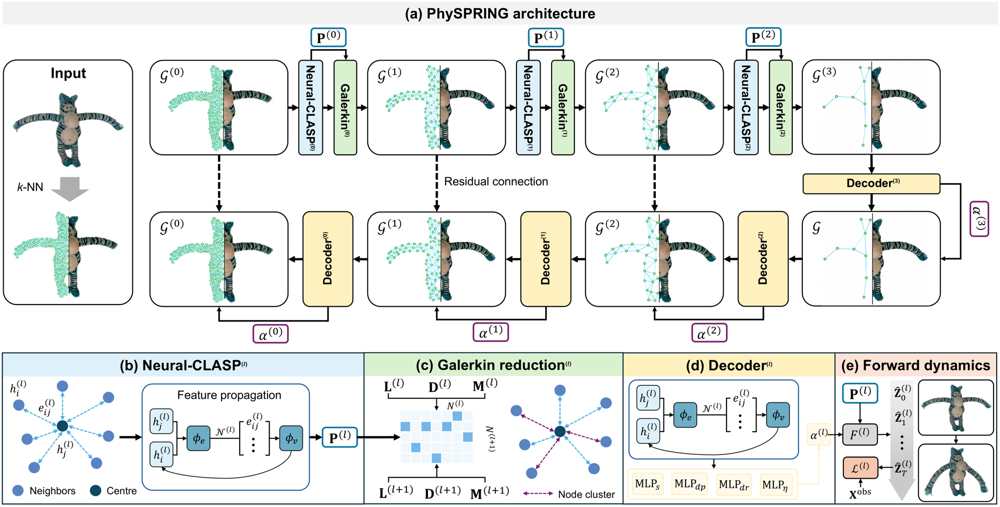

A · TOPOLOGY
Learned graph coarsening
A hierarchical GNN learns discrete node assignments from geometric, topological, and dynamic features.
A differentiable GNN framework that learns reduced spring–mass digital twins while preserving explicit physical structure for efficient simulation and downstream robot evaluation.


Physics-informed digital twins are often reconstructed at the resolution needed for visual geometry, even when downstream dynamics can be represented with far fewer degrees of freedom. PhySPRING learns a hierarchy of progressively coarser graph topologies together with their mechanical parameters, keeping each level as an explicit spring–mass system rather than replacing simulation with a black-box dynamics model.
From dense reconstruction to simulation-ready reduced-order models.

A hierarchical GNN learns discrete node assignments from geometric, topological, and dynamic features.
Galerkin projection carries the system matrices across scales so each reduced model remains a spring–mass system.
Topology and mechanical parameters are trained through differentiable forward rollouts against observed motion.
On the PhysTwin benchmark, the reduced hierarchy maintains useful dynamics while lowering simulation cost.
Each object is shown with four synchronized videos so the observation, PhysTwin baseline, SPRING-Dense, and SPRING-Sparse can be compared directly over time.
Visualize the same grasping task with Level-0 through Level-3 reduced twins to compare task-level behavior as the physical model becomes progressively coarser.
PhySPRING addresses the mismatch between visually dense reconstruction and the lower physical complexity needed for task-relevant dynamics. The method learns a hierarchy of coarsened graph topologies and mechanical parameters with a differentiable GNN, while preserving each level as an explicit spring–mass system. Experiments on PhysTwin show improved dense reconstruction and prediction, stable fidelity across reduced models, and faster simulation. The reduced models are further evaluated in a Real2Sim robot policy pipeline, where they preserve manipulation utility while improving action-sampling efficiency.
@article{jing2026physpring,
title = {PhySPRING: Structure-Preserving Reduction of Physics-Informed Twins via GNN},
author = {Yixiong Jing and Xingyuan Chen and Guangming Wang and Olaf Wysocki and Haibing Wu and Brian Sheil},
journal = {arXiv preprint arXiv:2605.07687},
year = {2026},
note = {NeurIPS 2026 Poster}
}